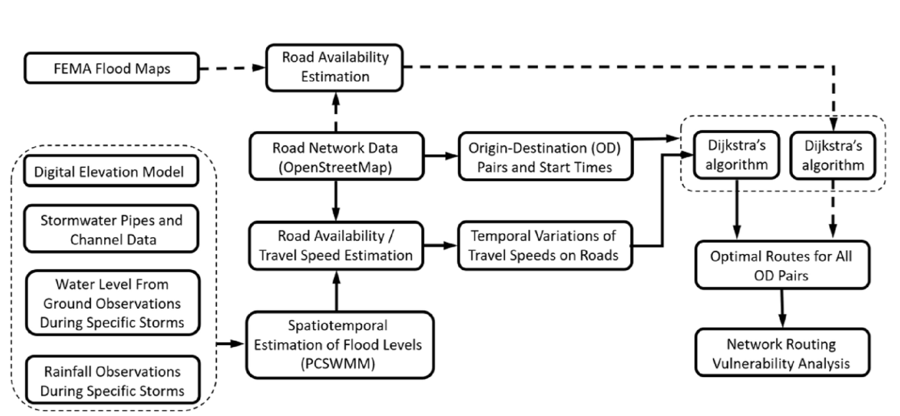

Road network vulnerability under floods
Research period: August 2020–August 2023, Urban Flooding Open Knowledge Network. Supervisors: Anderson R. de Queiroz, Ranji Ranjithan, and A. Sankarasubramanian. Supported by NSF Convergence Accelerator Award 2033607.
A dry road may become unreachable when surrounding connections flood, and a route that works early in a storm may disappear later. Understanding these changes helps identify isolated neighborhoods and the road connections that become most important during an emergency.
Connecting flood physics and route optimization
The framework combines a two-dimensional stormwater model, PCSWMM, with road geometry and speed limits. Hourly inundation estimates reduce modeled travel speeds and close road segments above the study’s 300 mm depth threshold. A time-dependent shortest-path algorithm accounts for evolving conditions and allows waiting before continuing a trip; an additional route-generation procedure tests whether alternative paths can preserve access.
The case study evaluates 20,000 origin–destination pairs in Wilmington, North Carolina, during Hurricanes Florence, Dorian, and Matthew. It compares routes planned with storm-specific flood information against routes planned without that information, and separately examines the network implied by FEMA’s 100-year flood maps.

From water levels to accessible routes. Figure 1 from de Faria et al. (2026) shows how physical flood estimates enter the routing model. The FEMA branch supplies a static comparison; the stormwater branch captures changes through time.
Access changes as a storm unfolds
Storm-specific information changes which trips remain feasible. Early in the Florence and Dorian simulations, about 60% of the sampled trips were feasible with flood-aware routing. Even after considering alternative routes, uninformed routing retained feasible options for only about 43% and 24%, respectively. Timely flood information can therefore make a substantial difference to accessibility.
The analysis also identifies indirect isolation: some road segments are not flooded themselves, but no feasible cross-region route can reach or use them. The most vulnerable region and the most heavily used surviving connections change with the storm and its stage. In these three case studies, the FEMA-based analysis underestimates disruption relative to the storm-specific simulations.

Connectivity shifts with the storm. Figure 9 compares (a) FEMA, (b) Florence, (c) Dorian, and (d) Matthew. Green roads serve interregional routes even at high severity; yellow and red identify roads used only at less severe stages. Purple roads are already blocked at low severity. Gray roads do not appear in feasible interregional routes. Base maps © OpenStreetMap contributors. Source paper.
I contributed to the conceptualization, methodology, software, formal analysis, and visualization, and wrote the original draft. The framework provides measures of accessibility and network vulnerability to support emergency planning.
The application focuses on connectivity within city limits, uses randomly sampled trips rather than evacuation demand, and does not simulate the full recession to prestorm conditions. Its depth-based travel rules omit flow velocity and require further calibration; reliable application depends on locally validated flood estimates.
Paper and code
de Faria, de Queiroz, Sankarasubramanian, and Ranjithan (2026). Routing Optimization Framework for Exploring Time-Varying Urban Road Network Vulnerability under Floods. Journal of Infrastructure Systems.